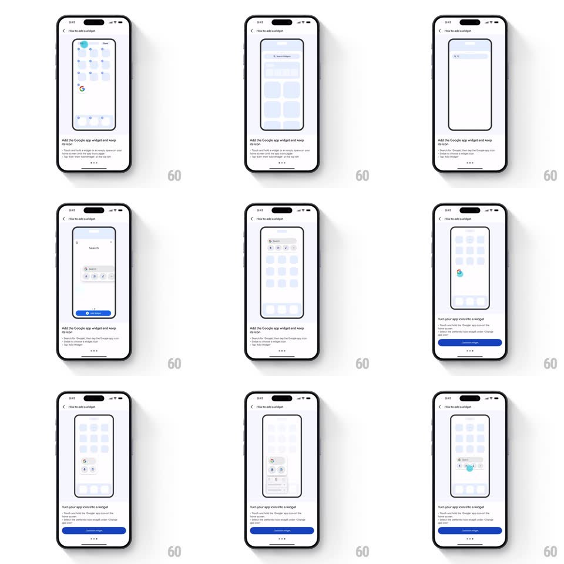

Media
Frame-by-frame

Rebuild this animation 1:1: Google's "How to add a widget" tutorial - a looping demo inside a phone mockup shows a finger dot long-pressing the home screen, opening the widget picker, and dropping the Search widget, over paginated explainer copy.

Rebuild this animation 1:1: Google's "How to add a widget" tutorial - a looping demo inside a phone mockup shows a finger dot long-pressing the home screen, opening the widget picker, and dropping the Search widget, over paginated explainer copy.
## Integration
Integration: stack-agnostic spec - springs given as stiffness/damping, timed motions as duration + curve; map every value to your framework and animation library of choice.
## Scene
A "How to add a widget" sheet: a centered phone-frame mockup playing the demo, explainer copy below ("Add the Google app widget and keep its icon" / "Turn your app icon into a widget"), page dots, and a blue pill button.
## Motion spec
Pattern: looping guided-demo animation inside a device frame, ~6s cycle.
- Long-press: a teal finger dot lands on the mockup's home screen (fade in, 150ms), holds (the app icons start jiggling, +-2deg wobble at 8Hz), and the edit UI appears.
- Pick: the dot taps the + corner (150ms press scale 0.9) and the widget gallery slides up inside the mockup (300ms, ease-out).
- Drag: the dot grabs the Search widget (lifts with a small scale-up, spring ~420/20) and drags it onto the home grid; the widget snaps into a slot (spring ~380/22) and the jiggle stops.
- Reset: the mockup fades (250ms) and the loop restarts; page dots and copy switch with the tutorial step.
- The host UI (title, copy, button) is static - only the in-mockup demo moves.
## Calibration
- The finger dot is always visible during gestures - no teleporting between steps.
- Icon jiggle starts on the long-press hold, not at touch-down.
## Reduced motion
Step through static frames on the same cycle.
## Don't miss
- The demo is framed by the device mockup - everything happens inside its screen.
- The drag path is visible: the widget follows the dot, it does not jump slots.